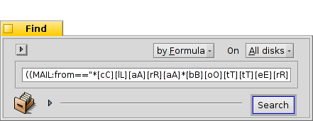

| Зміст |
|
Вікно Пошук (Find ) Основні запити - "за назвою" Розширені запити - "за атрибутом" Ще більш розширені запити - "за формулою" Вікно результатів Шаблони запитів |
Запити (Queries)
Запити це пошук файлів за допомогою їх атрибутів який виконується у Tracker'і або Терміналі. Запити зберігаються у теці /boot/home/queries/ типово на протязі семи днів до її очищення. Зверніть увагу, що це не статичні списки результатів пошуку, але формули запитів, які запускають новий пошук щоразу, коли ви відкриваєте їх.
Ще краще, що Ви не повинні робити правий двоклік мишкою для перезапуску запитів. Ви можете зануритися у збережений запит так само як у будь-яку теку через активацію підменю.
 Вікно Пошук (Find)
Вікно Пошук (Find)
Ви починаєте запит, викликавши пункт або з меню Deskbar'у або з будь-якого вікна Tracker'а або з робочого столу (який насправді є повноекранним вікном Tracker'а). Клавішами швидкого доступу є комбінація ALT F. З'явиться вікно Знайти (Find):

Виберіть недавні або збережені запити або збережіть поточні параметри пошуку в теці Шаблони Запитів (Query Template).
Конкретизуйте Ваш пошук вибравши для певних типів файлів.
- Виберіть спосіб пошуку:
- - базовий пошук для імені файлу та теки
- - розширений пошук, Ви визначаєте умови для одного або кількох атрибутів
- - ще більш розширений пошук, Ви можете підібрати ряд умов запиту
Виберіть диск для пошуку.
Введіть умови пошуку.
Розширювач який приховує / показує додаткові опції.
Зніміть прапорець якщо не бажаєте самознищення запиту через 7 діб.
Відмітьте якщо запит повинен робитися .
При необхідності введіть ім'я для цього запиту, якщо ви хочете його зберегти.
Ви можете методом drag&drop перемістити іконку будь-де для збереження запиту. Виконання цього правокліком мишки дозволяє зберегти запит як шаблон.
Основні запити - "за назвою"
Якщо Ви просто хочете відшукати всі файли та теки які відповідають певному шаблону залиште метод пошуку , введіть умови пошуку у текстове вікно та натисніть ENTER.
Розширені запити - "за атрибутом"
Ви можете створити більш складні запити за допомогою функції пошуку в атрибутах певних типів файлів. Для того щоб це працювало, атрибути повинні бути проіндексованими.

Почніть змінивши тип файлів з , наприклад, на та вибравши метод пошуку .
Це додасть зліва випадаючі меню та кнопки та під ними. У меню Ви зможете вибирати атрибути пошуку. За допомогою кнопок та Ви можете додати до запиту додаткові атрибути або назад видалити їх. Ці атрибути можуть бути логічно пов'язані між собою за допомогою кнопок Та (And) / Або (Or).
Зробимо це для запиту пошти як у прикладі:

This is your Find window when you're looking for all emails Clara Oswald has sent to you in the last two months that had in the subject "sufflé" or "impossible".
As you see, searching through time-based attributes supports some useful phrases: besides for the "last 2 months", you could also use "today", "yesterday", "Monday" or "last Monday" (which would be the Monday last week), or "last 2 minutes/hours/days/weeks".
A good way to cut down the number of search results.
Ще більш розширені запити - "за формулою"
Набір запиту за формулою вручну є складним і насправді вельми непрактичним. Але він як і раніше має свої переваги.
Візьміть вище запит по атрибуту листів Клари щодо вібрафон і т.д. Якщо у вас встановлені всі атрибути та умови їх пошуку, спробуйте перейти до режиму та перевантажте рядок запиту цієї однієї лінії :
Ще раз як текст, відредагований для зручності читання:
(((((MAIL:from=="*[cC][lL][aA][rR][aA] [oO][sS][wW][aA][lL][dD]*")
&&(MAIL:when>=%2 months%))
&&(MAIL:subject=="*[sS][uU][fF][fF][lL][éÉ]*"))
||(MAIL:subject=="*[iI][mM][pP][oO][sS][sS][iI][bB][lL][eE]*"))
&&(BEOS:TYPE=="text/x-email"))
Що ж робити?
Ви можете скопіювати і вставити рядок в електронну пошту, форум або IRC іншим для використання або відладки.
You can use this method to construct a query in mode and then switch to mode, to comfortably generate a search string. Enclosed in single quotes, that string can then be used with the query command in the Terminal.
Ви можете точно налаштувати запит, вставивши круглі дужки, де це необхідно, зробити деталі чутливими до регістру або звести нанівець логічні комбінації шляхом заміни, наприклад, "==" на "!=" для NOT AND. Все, що вам потрібно, це базове розуміння регулярних виразів та можливо, розуміння основ створення сценарії.
Вікно результатів
Після запуску пошуку вікно Пошук (Find) зміниться на вікно результатів. Ось приклад для запиту назви "server":

Крім того, вікна з результатами на сірому тлі працюють точно так же, як і будь-яке інше вікно Tracker. Варто відзначити деякі речі :
Ви можете відкрити місце розташування файла двокліком мишки по його атрибутe шлях.
За допомогою пункту або комбінації ALT G Ви повернетесь до вікна Пошук (Find) для уточнення запиту.
Запит активний, якщо файл, який відповідає вашим критеріям пошуку буде з'являтися та зникати з вашої системи, ця зміна результатів відбувається в в режимі реального часу.
Ви можете призначити розумний макет атрибутів для результатів запиту конкретного типу файлу. Відкрийте теку, що містить файли того типу для якого Ви хочете створити шаблон та розташуйте атрибути так як ви хотіли би, щоб представлялися результати запиту. Розмістіть цей макет за допомогою пункту .
Відкрийте теку /boot/home/config/settings/Tracker/DefaultQueryTemplates, створіть нову теку з назвою group/filetype, замінивши слеш нижнім тире, наприклад, "audio_x-mp3". Відкрийте нову теку і вставте макет, який треба попередньо скопіювати, за допомогою пункту .
Шаблони запитів
При правому двокліку по збереженому запиті одразу запускається пошук та відкривається вікно з результатами. Тим не менше Ви можете не хотіти шукати за допомогою точно такого параметру, але використовувати його в якості відправної точки тільки злегка підправивши формулу.
При використанні пункту (дивись (1) у знімках екрану нагорі) або захопивши іконку (10) будь-де правокліком мишки можна створити такий самий шаблон. Двоклік відкриває не вікно з результатами, а панель Пошук (Find) що дає вам можливість швидко змінити рядки пошуку або додати / видалити атрибути.
Де б ви не вирішили зберегти шаблони запитів, вони будуть перечислені в меню останніх запитів панелі Знайти (Find).